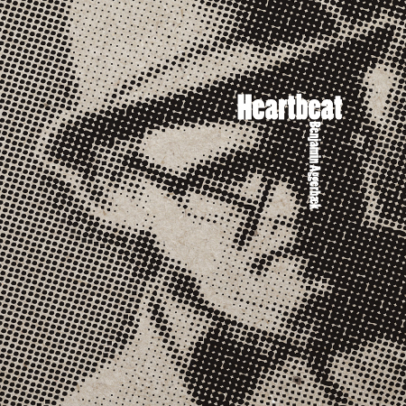

News
Her er solopladens første omtale:
http://jazznyt.blogspot.com/2012/01/benjamin-aggerbk-heartbeat-gateway.html
Hej Alle sammen
Nu i 11 time af 2011 har jeg faktisk fået fingrene i mit helt nye
album. Heartbeat er indspillet på 1 nat i et studie i Austin,
Texas. Med min fantastiske Collings guitar i den ene hånd og med en
stor Tennessee whiskey i den anden, tog jeg i studiet til en lang
natte session med nogle suveræne producere og indspillede mit første
solo-album. Et album som er optaget helt igennem live med kun guitar
og vokal - Intet andet. Alt indspillet i "real time" og derfor kan jeg
for første gang virkelig invitere med ind i studiet og skabelsen af
dette album. Det er det mest ærlige og nærværende album jeg nogensinde
har lavet og jeg glæder mig meget til at dele det med så mange af jer
som overhovedet muligt.
Første gang i kan få fat i albummet er fredag d.6 januar i Buddhas
Jazzklub i Hillerød allerede kl.16.30! Hop forbi klaverfabrikken.dk og
læs mere
Dernæst skal I holde øjne og ører åbne for en lille intim
release-fest lørdag d.11 februar kl.17 et sted i
København. Titelsangen, Heartbeat er forresten skrevet til
København, så det bliver med sikkerhed og følsom og nærværende
release-fest!
Godt Nytår & På Genhør til et fantastisk nyt musik år i 2012
Love, Benjamin
|